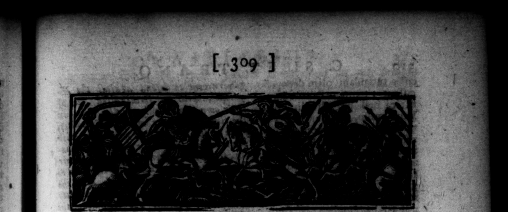
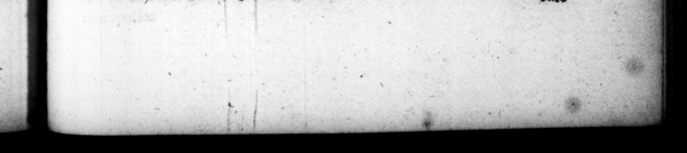

C: 3 E T. TRANQUILLL A VITELLI OS. * * 4 * 9 = * 1 - 7 ö ö % ' © T6. 4 »% l » : 4 "v5 . " : 4 - 0 '} v4 g 4 Pp * 9 9 1 7 — 0 8 I, 5 on Trrrk ORUM v originem alii aliquidem Sc Jivfifliois, tradunt: — vetetem & notoris Vitellij K — rer „ niſi aliquanto prius de familia conditione variatum eſſet. Exſtat Q. Eulogii ad Q, Vitelllum, divi Auguſti que ſtorem, libellus, quo continetur, Virellios Fauno Aboriginum rege, & Vitellia, que multis locis pro numine coleretur, ortos, toto Latie imperaſſe. Horum reſiduam ſtirpem ex Sabinis tranſiſſe Romam, atque inter patritios allectam : indicia ſtirpis diu manſiffe , viam Viceliam- ab Janiculo ad mare -- oy item col oniam ejuſdem nominis, quam genrili * ne Ager. thers of late ſtanding very ks mm 528 77 * N ef IFFERENT Hide 7 differen ac2 original 8 the Vi E will have it to be — — ** to think had been occaſioned the flatterers and derra cor: — after he came to be emperor, but that the condituun of that family was on ferentiy re r ſome S 2 There is extant 4 book " 8 7 7 w to Q. 2 Le uf tus, wherein ts 7 T were deſcended from Roa 4 King of 5 Abori ines, and Pie wh e., in aces 4s 4 fp EET that they rei Latium.That Fu. ng were left of the 25 25 9 removed out of the country bines to Rome, and were cho — the Patricnan!, that ſome mon of the fam 2 "contimied 4 long time, 4 the Vitellian way reaching from the Faniculum to the ſea, and | avs a colony of that name, _ in of otd they 7 th MY Po - ents /

